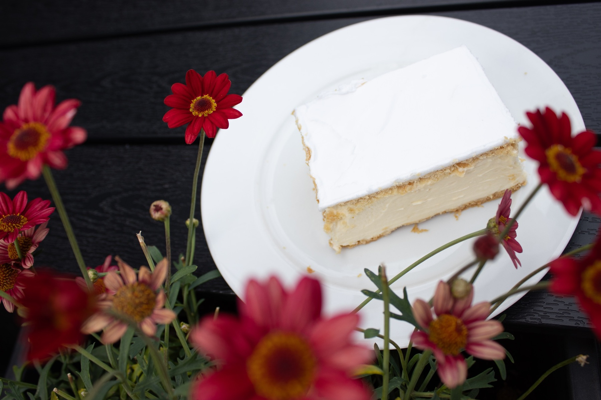
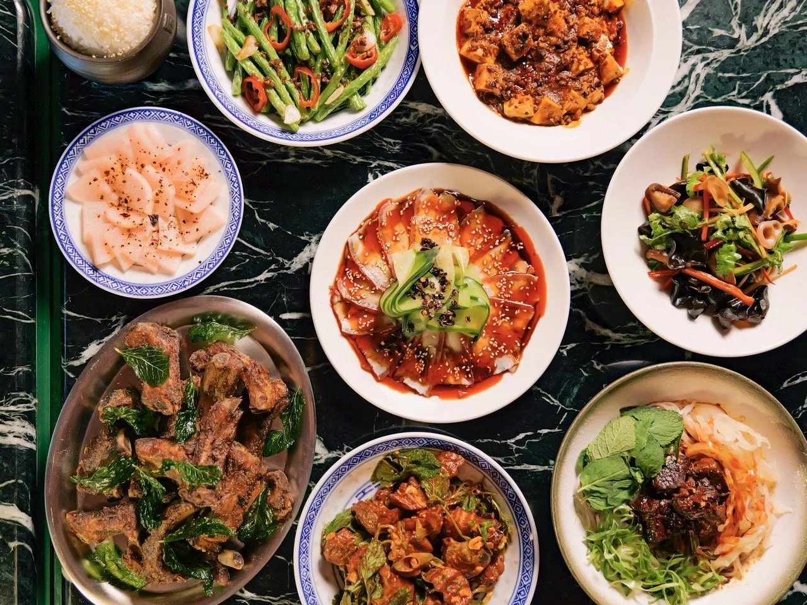
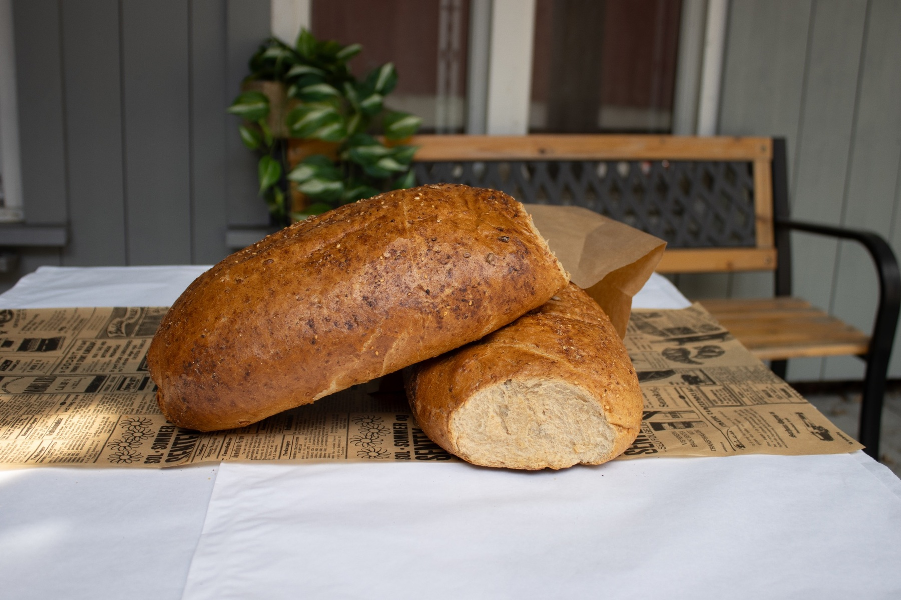
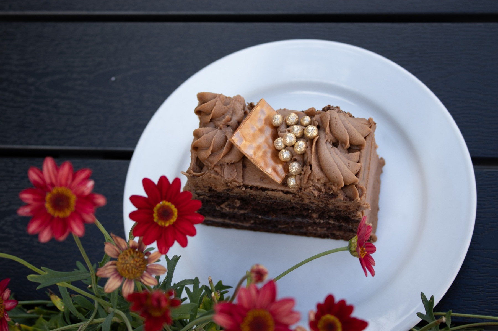
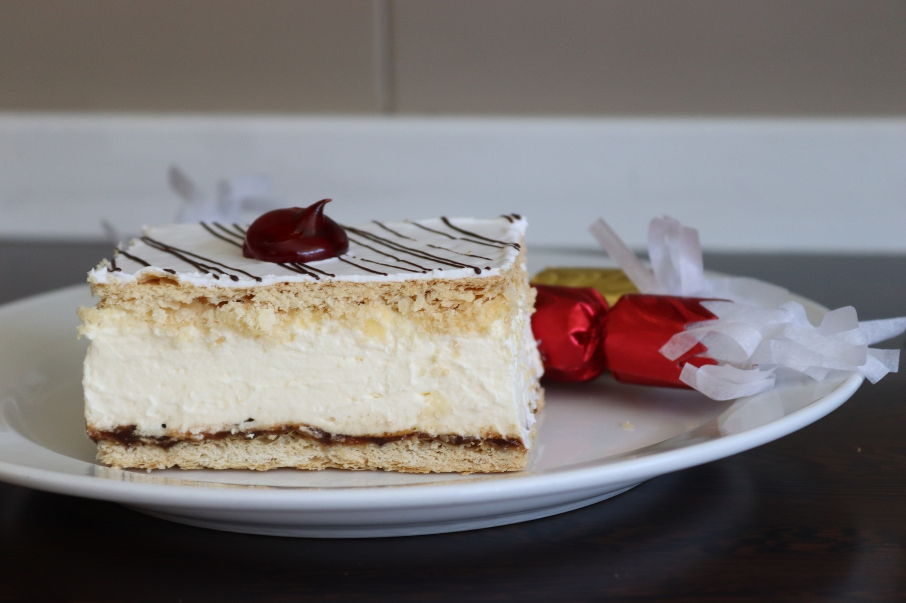
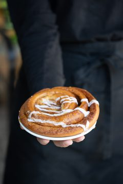
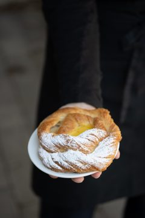

Håndbakt tradisjon
Vi avklarer omfang og tid før vi starter.
Be om tilbud →
servering · Norge
Granum Bakeri - Et familiedrevet bakeri på Lillehammer arbeider med håndbakt tradisjon og kjent for marsipankaker.
Tjenester

Vi avklarer omfang og tid før vi starter.
Be om tilbud →
Du har én kontakt gjennom hele saken.
Be om tilbud →
Vi sier hva det koster før vi begynner.
Be om tilbud →
Arbeidet dokumenteres mens det pågår.
Be om tilbud →Om oss
Hos oss kjenner du igjen smaken av tradisjon, og du møter mennesker som er glade i håndverket sitt.
Vi baker gjærbaksten på gamlemåten , der deigen får tid til å hvile før steking, og vi setter ære i å bruke gode råvarer i alt vi lager.
I disken finner du ferske brød og rundstykker , friske søte bakevarer og wienerbakst , samt vårt store utvalg av marsipan- og kremkaker .
Vi tilbyr catering med snitter og påsmurte fat — tilpasset antall gjester og smakspreferanser.
Slik kunne det se ut
I helgene blir det fullt, og bestillinger havner på lapper. En side der gjestene ser ledige bord, bestiller og velger meny på forhånd gjør kvelden roligere.
Bordet og maten bestilt på forhånd
Fra arbeidet
Du beskriver hva du trenger, og vi svarer med hva det krever.
Vi blir enige om omfang, pris og når det skjer.
Vi gjør jobben og går gjennom resultatet med deg.
Eksempel
Kunder


Ordrett fra nettsiden deres
Vi har to avdelinger på Lillehammer — en norda brua og en midt i gågata. Stikk innom for en kopp kaffe og noe godt, eller ta kontakt hvis du ønsker å bestille. Vi gleder oss til å se deg!
Målet til Magne og Bera var en liten familiebedrift, men kundemassen økte raskt og i dag har bakeriet 20 ansatte. Datteren Hilde ble involvert i bakeriet fra starten av. Først ved siden av sin vanlige jobb før hun etter hvert tok over som daglig leder.
Et lite tilbakeblikk — avisomtaler fra den gangen bakeriet og avdelingen i gågata åpnet.
Kontakt
Ta kontakt for en uforpliktende prat i Norge.
Beskriv saken, så svarer vi med hva det krever og hva det koster.
Send en henvendelse